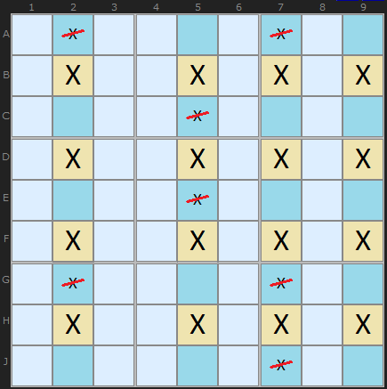
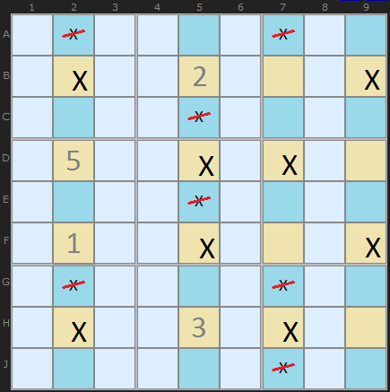
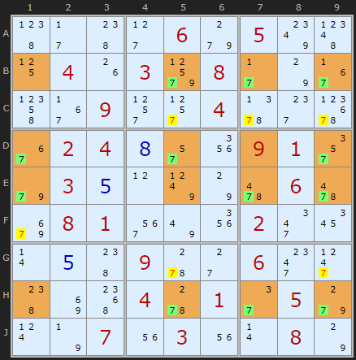
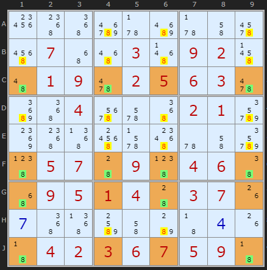
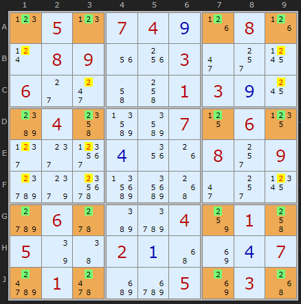
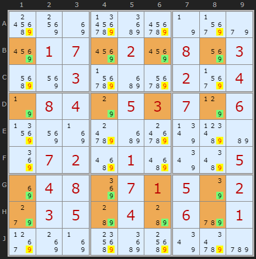

SudokuWiki.org
Strategies for Popular Number Puzzles
Jellyfish Strategy

- four rows such that, in total, four cells are occupied in the row by a candidate number; or
- four columns such that, in total, four cells are occupied in the column by a candidate number
If this configuration is found then we can look in the opposite direction (if by row then down the column, if by column then across the row. If any candidates are found they can be eliminated. After the elimination both conditions above will hold.
This diagram shows a full Jellyfish with four X found in four columns and aligned on four rows. It means we can remove any X found in the columns and it leaves behind a 4 by 4 grid.
How does it work? Pick any yellow cell in the example above that contains an X. Keeping an eye on it. Pretend the solution actually is X. All others Xs in the row and columns are suppressed. What we're left with is a Swordfish. The Swordfish logic then applies. Pick any X in the Swordfish and it reduces to an X-Wing. Since any combination of Xs on the grid are possible there is no room for Xs outside the grid - that align on the grid rows and columns.

One way to double check the logic is to pretend any of the crossed out Xs is a solution. When you do that and trace the consequences you will find at least one row (or column) with no X left - clearly a bad consequence.

This is a 2-3-3-2 formation Jelly Fish since there are 7s absent in B1 and H2.

I am pleased to report a massive catch by Klaus Brenner from Germany. He has created a 31 clue Sudoku with a required JellyFish containing an amazing 18 eliminations.
Well done Klaus!
8th October 2012
(Turn off Rectangle Elimination)

To my knowledge this is the first Perfect 4-4-4-4 Jellyfish. Perfect in the sense that every 2 in the sixteen cells that form the pattern - the 2 is still a candidate. In the examples above, each contain some cells that are clues or solutions. This type of formation is pretty rare in Swordfishes, let alone Jellyfish. Klaus Brenner also found this puzzle.
13th July 2014

I have a new crop of Jelly-Fish discovered by Klaus. This one is a maximally eliminating pattern taking off all twenty 9s.
Jellyfish Exemplars
These puzzles require the Jellyfish strategy at early on (but are diabolical puzzles overall).They make good practice puzzles.
All discovered by Klaus Brenner
Exotic variations of the Swordfish continue with the Finned Swordfish and Franken Swordfish.
Comments
Email addresses are never displayed, but they are required to confirm your comments. When you enter your name and email address, you'll be sent a link to confirm your comment. Line breaks and paragraphs are automatically converted - no need to use <p> or <br> tags.
... by: Jonesvan
... by: speter
Can you please explain how the candidate 2 at B1 (for example) is eliminated!?
... by: Pieter, Newtown, Oz
I found an interesting Jelly-Fish (my first ever, actually) in the local paper [Load Puzzle].
It's interesting cuz there are 2 simultaneous Jelly-Fish on 4's! The Solver finds CDFG2357 (a 3-4-2-3 J/F), but there is also one at ABEJ1469 (a 3-4-4-3), and also interestingly, the same 7 eliminations are made by both.
BTW - Since I use Letters & Numbers to define cells, I found the rYcX notation totally confused me at first! "JF=r3467c2357"???
... by: John Francis
You can extend all of these in the following ways:
A. You are not restricted to rows and colums.
B. As with X-Wing and Swordfish, you can 'Fin' Jellyfish.
C. Why stop at 4......
The reason for stopping at 4 is because of the symmetry between possible candidates in a cell and potential sites for a given digit.
It's best explained by considering Naked and Hidden n-tuples.
Consider a Naked heptuple. This is a set of seven cells in one set (row, col or box) which between them only have seven different candidates. This means that these seven cells will contain those seven values in some order.
Now describe that situation it another way. The cells *not* in the n-tuple are the only ones which can include numbers not in those n candidates.
This is the description of a hidden (9-n)-tuple (hidden pair, in this case).
This means there's no need to go beyond 4 in describing a strategy; Naked quints are the same as hidden quads, and so on. For a strategy described using numbers greater than four there is an equivalent description using smaller numbers (and interchanging the roles of candidates in a cell and positions for a digit).
... by: John White
Take any group of N disjoint (not overlapping) sets(row,column or box) and compare them to any other group of N disjoint sets. If the overlap of these two groups contains all the possible candidates for any given number then you can remove all the candidates in the other group that are not in the overlapping area.
If N=2 you get X-Wing
If N=3 you get Swordfish
If N=4 you get Jellyfish
What this means is that you can extend all of these in the following ways:
A. You are not restricted to rows and colums.
B. As with X-Wing and Swordfish, you can 'Fin' Jellyfish.
C. Why stop at 4......
(Finning: if all candidates from one of the groups that are not contained in the overlap can be contained by one more set (row, colum or box) (the set must not be in the original 2 groups!), then the candidates contained in overlap of this extra set and the second group can be removed.